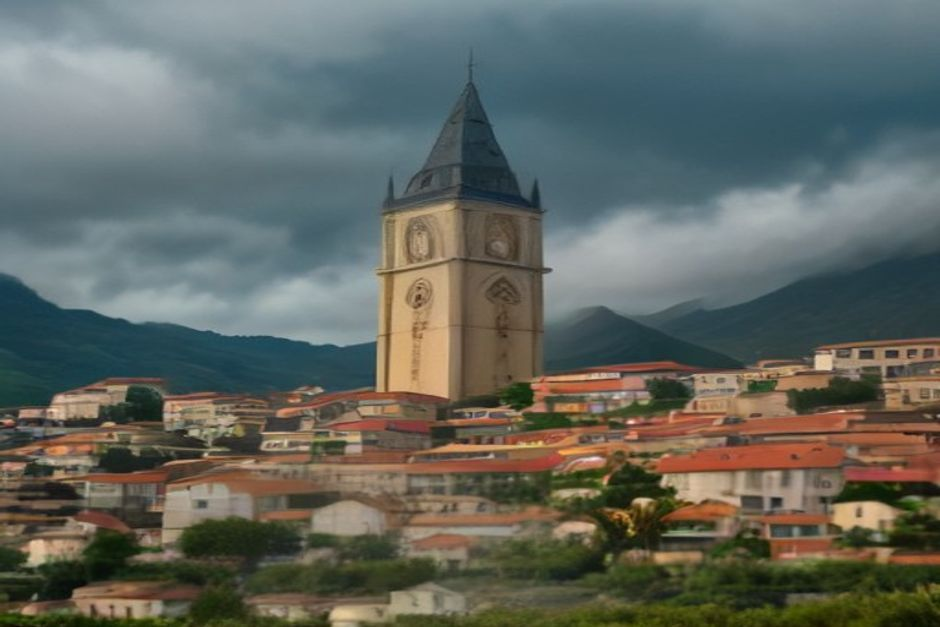
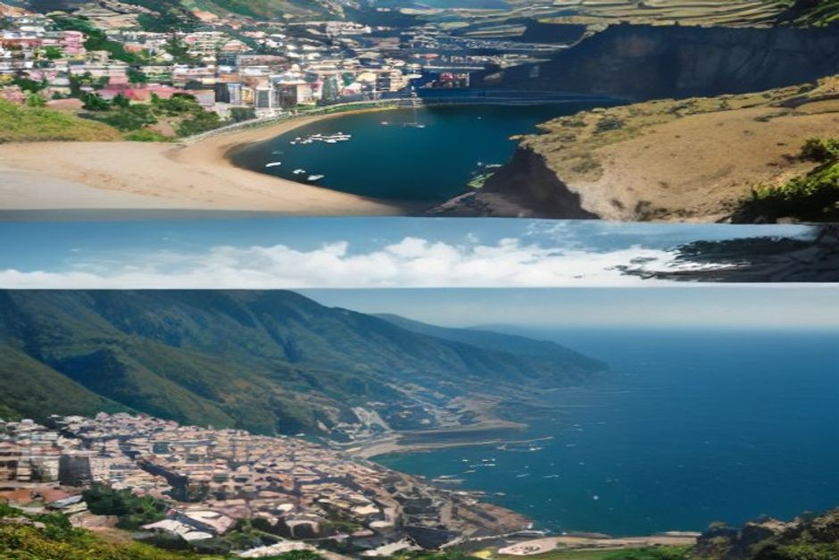

Wie ist das Wetter auf Madeira? Die ehrlichste Antwort lautet: Wo genau? Die Insel ist nur 57 Kilometer lang, und doch scheint in Funchal die Sonne, während es im Norden schüttet. Hier lesen Sie, wie das zusammenhängt, welche Küste die trockenste ist und wie Sie Ausflüge und Bootstour darauf abstimmen.
Die kurze Antwort: Madeira hat mehrere Wetter gleichzeitig
Wer vor der Reise den Wetterbericht für „Madeira“ liest, bekommt oft ein verzerrtes Bild. Ein Symbol mit Wolken und Regentropfen beschreibt meist die Berge oder die Nordküste, nicht den Strand und die Promenade von Funchal. Für die Planung hilft eine einfache Faustregel:
- Südküste (Câmara de Lobos, Funchal, Ponta do Sol, Calheta): am sonnigsten und trockensten, im Jahresschnitt zwischen 18 und 24 °C.
- Nordküste (Santana, São Vicente, Porto Moniz): grüner, kühler und deutlich regenreicher.
- Berge (Pico do Arieiro, Pico Ruivo): 8 bis 10 °C kühler als Funchal, oft in Wolken.
Warum Madeira so unterschiedliche Klimazonen hat
Verantwortlich ist ein Gebirgszug, der die Insel der Länge nach teilt. Sein höchster Punkt ist der Pico Ruivo mit 1.862 Metern. Der Nordost-Passat bringt feuchte Atlantikluft heran. Sie trifft auf die Bergwand, steigt auf, kühlt ab und regnet sich über dem Norden und den Gipfeln aus.
Auf der anderen Seite sinkt die Luft wieder ab. Sie ist dann trockener und wärmer. Funchal liegt in diesem Regenschatten. Deshalb stehen Hauptstadt, Flughafen und Marina im Süden. Meteorologen nennen das einen orografischen Effekt, auf Madeira lässt er sich auf engstem Raum erleben: Mit dem Auto durchqueren Sie die Insel in etwa neunzig Minuten.

Regenschatten und Passat: Funchal gegen Santana
Santana und die übrige Nordküste liegen dem Passat direkt zugewandt und fangen die Feuchtigkeit als Erste ein. Das Ergebnis: grüne Hänge, kühlere Luft und häufiger ein grauer Himmel, während es im Süden klar bleibt. Teile der Nordküste und des Berglands bekommen drei- bis viermal so viel Regen wie Funchal, das im Jahresschnitt unter 600 mm liegt.
Genau deshalb sind Porto Moniz, São Vicente und Santana so üppig bewachsen: Mehr Regen lässt mehr Lorbeerwald wachsen. Es ist dieselbe Insel, aber praktisch zwei Klimazonen, getrennt durch ein Gebirge, das Sie sogar vom Wasser aus sehen.
Einheimische planen Tagesausflüge ständig danach. Wirkt der Norden zugezogen, ist die Südküste meist noch offen.
Pico do Arieiro und Monte: Kälte und Wolkenmeer
Mit jeweils 100 Höhenmetern sinkt die Temperatur um etwa 0,6 °C. In den Bergen ist es deshalb an einem durchschnittlichen Tag 8 bis 10 °C kühler als in Funchal. Wer zum Sonnenaufgang oder auch nur zu einer Wanderung hinauffährt, sollte warme Kleidung dabeihaben, selbst im Hochsommer.
Dazu kommt das „Wolkenmeer“: eine geschlossene Wolkenschicht zwischen etwa 1.000 und 1.400 Metern Höhe. Steht man darüber, zum Beispiel am Pico do Arieiro, blickt man auf eine weiße Decke hinab, mit blauem Himmel darüber. Darunter kann ein Ort bedeckt sein.
Monte liegt rund 570 Meter über Funchal und steckt oft genug in dieser Wolkenbank. Mit der Seilbahn sind Sie in wenigen Minuten dort, und es ist spürbar kühler und diesiger als an der Marina.
Beste Reisezeit: Wann ist das Wetter auf Madeira am beständigsten?
Von Spätfrühling bis Frühherbst, grob von Mai bis Oktober, erleben Sie an der Südküste die verlässlichste Folge trockener, warmer Tage. Ab Juni ist das Meer angenehm genug zum Schwimmen.
Der Winter ist milder als in den meisten Teilen Europas, in Funchal fällt es selten unter 14 bis 15 °C. Er bringt aber mehr Frontensysteme. In dieser Zeit lohnt sich der Blick auf eine kurzfristige Küstenvorhersage wirklich, und es ist sinnvoll, Tage für Ausflüge flexibel zu halten.
Der Beiname „Insel des ewigen Frühlings“ kommt nicht von fehlendem Wetter. Golfstrom und subtropische Lage halten die Südküste die meiste Zeit des Jahres in einer schmalen, gut vorhersehbaren Spanne von 18 bis 24 °C, ohne die Hitze oder die harten Winter des Festlands.
Was Sie bei Wechselwetter einpacken sollten
Zwei Klimazonen verlangen zwei Packlisten:
- Für die Küste: normale Sommerkleidung, Sonnenschutz, Badesachen.
- Für die Berge: eine leichte Jacke oder Fleece und etwas Wasserdichtes, auch im Sommer.
Haben Sie etwas auf dem Wasser vor, packen Sie für die Südküste, nicht für das, was die allgemeine Inselvorhersage nennt. Die beschreibt meist einen ganz anderen Ort.

Bootstour ab Funchal: Warum die Südküste der sicherste Ort ist
Die Marina do Funchal liegt in dem Teil Madeiras, in dem das Wetter am verlässlichsten ist. Eine unbeständige Vorhersage für „Madeira“ beschreibt oft die Nordküste oder die Berge, nicht das Wasser vor Funchal, Câmara de Lobos oder Cabo Girão.
Ob eine Fahrt stattfinden kann, entscheiden vor allem Wind und Dünung, nicht eine Wolke über Monte. Unsere beiden Skipper aus Madeira prüfen die Bedingungen am Tag selbst und passen bei Bedarf Route oder Uhrzeit an, statt wegen Regens vierzig Minuten landeinwärts abzusagen. Garantieren können wir das Wetter nie, und wir versprechen es auch nicht.
Bei Chifbay haben Sie das ganze Boot für Ihre Gruppe, bis zu 5 Gäste, Treffpunkt ist die Marina do Funchal, Steg C. Zur Wahl stehen:
- Tagestour, Start um 10:00 oder 14:00: 2 Std. 30 bis Ribeira Brava für 500 EUR oder 3 Std. weiter bis Ponta do Sol für 600 EUR, mit Câmara de Lobos, Cabo Girão sowie Badestopp und Paddleboards an der Fajã dos Padres.
- Sonnenuntergangsfahrt, Start 1 Std. 15 vor Sonnenuntergang, das ganze Jahr: 2 Std. bis Cabo Girão für 400 EUR oder 2 Std. 30 bis Ribeira Brava für 500 EUR, ohne Badestopp.
Die Preise gelten für das ganze Boot, nicht pro Person. Snacks und Getränke an Bord, ein 360°-Video mit der Insta360, Drohnenaufnahmen (wenn das Wetter es erlaubt) und Fotos mit einer richtigen Kamera sind immer dabei. Sie können bis 24 Stunden vor Abfahrt kostenlos stornieren, falls die Vorhersage Sie unsicher macht. Mehr dazu finden Sie unter Erlebnisse, bei den Bootstouren auf Madeira und in den praktischen Infos.
So planen Sie Ihre Tage auf Madeira
- Lesen Sie nicht den Bericht für „Madeira“, sondern den für Funchal und die Südküste.
- Legen Sie Bergtouren auf Pico do Arieiro und Pico Ruivo möglichst früh am Tag und mit Reserve für Wolken.
- Fällt der Norden aus, weichen Sie an die Südküste aus.
- Planen Sie die Bootstour für einen Tag, an dem Wind und Dünung gering sind, und lassen Sie sich von den Skippern beraten.
Die Berge fangen den Regen ab, damit die Küste es nicht muss.
Genau dieser Kompromiss macht die Südküste zu einem der verlässlichsten Orte Europas, um einen Tag auf dem Wasser zu planen, auch wenn über dem Pico do Arieiro Wolken hängen. Möchten Sie mehr erfahren, finden Sie bei uns auch Bewertungen anderer Gäste unter Bewertungen und weitere Artikel im Journal.